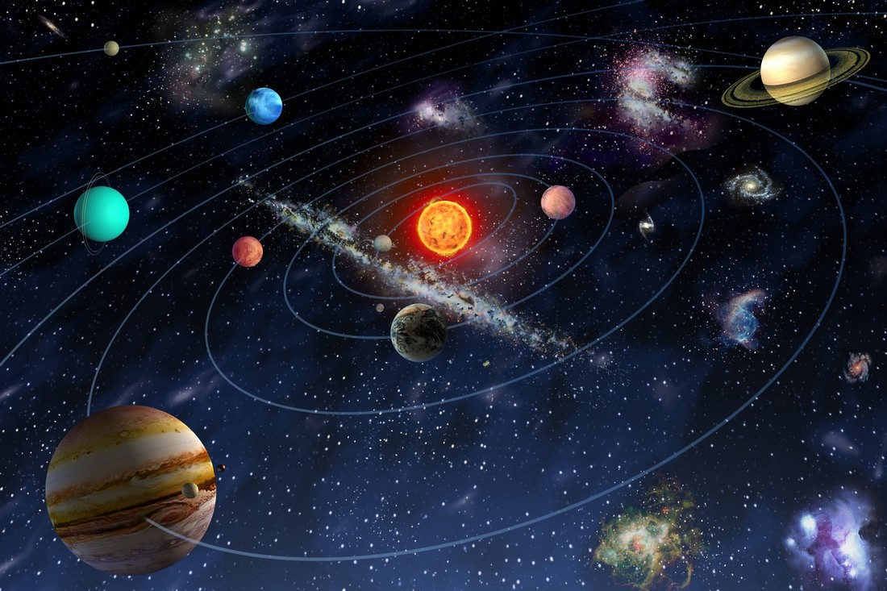
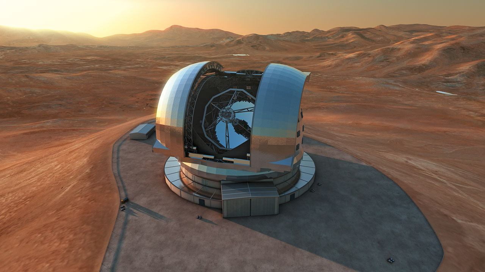
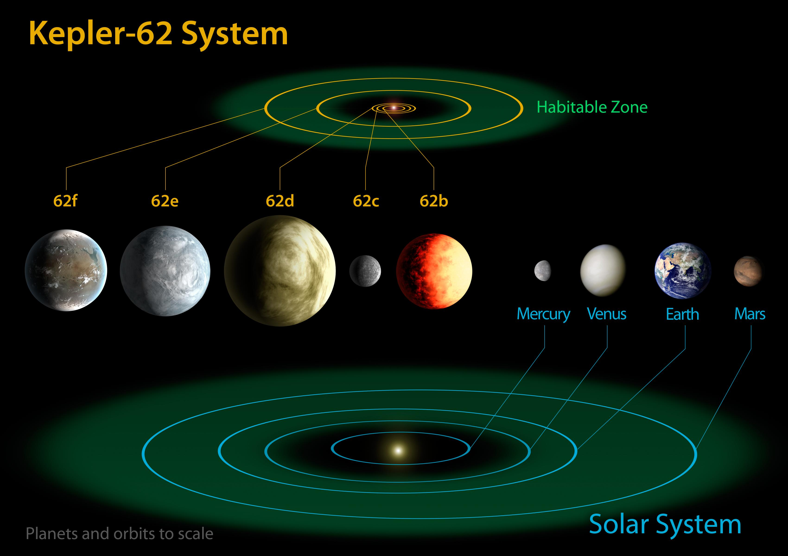
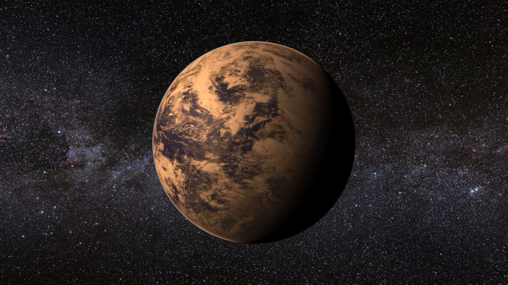
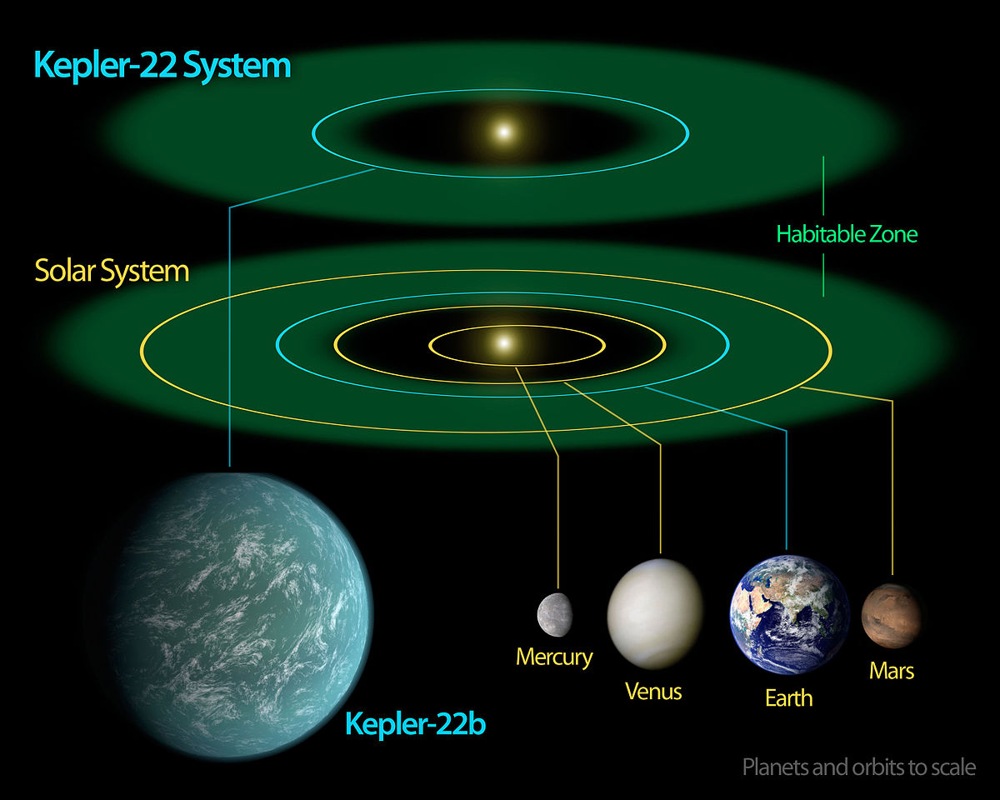
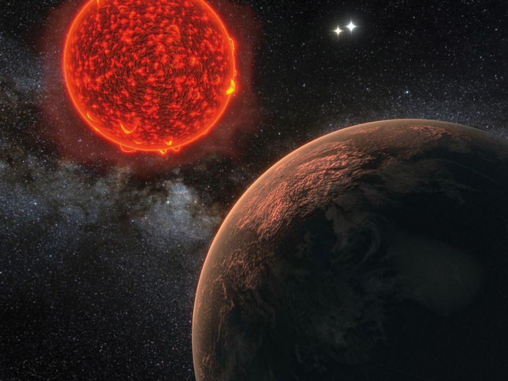
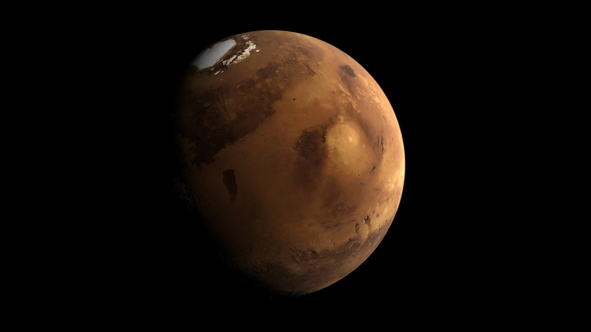

Экзопланеты: что из себя представляют, типы
Экзопланетой называется планета вне Солнечной системы. На конец 2018 года при помощи
современных технических средств человек обнаружил:
- 2935 систем звезд;
- 3934 экзопланеты.
- температурный режим;
- размеры;
- масса.
Это позволило четко разделить открытые небесные тела на две группы, несмотря на минимум знаний о них:
- земного типа (с твердым телом);
- газового типа.
о которых человечество не знает. Предстоит выявить, пригодны ли они для жизни.
Обнаружение экзопланет
Первую внесолнечную планету похожую на нашу обнаружили ученые из Канады в 1988 году у двойного газового шара Геммы Цефеи А.
В 2002 году открытие признано астрономическим сообществом.Годом позже найден коричневый карлик, признание открытия состоялось в 2002 году.
Существует шесть способов открытия экзопланеты:
- прямое наблюдение через телескопы;
- астрономический;
- радионаблюдение пульсара;
- спектрометрическое вычисление радиальной скорости звезды;
- транзитный метод;
- микролинзирование (в качестве линзы используется другая звезда).
Экзопланеты носят имена похожие на названия своих звезд с отдельно присваемыми литерами, чем отличаются друг от друга.
Первые изученные планеты, похожие на Землю
Kepler-62 f
 Планета, совершающая оборот вокруг газового шара Kepler 62, входящего в созвездие Лира, найдено телескопом «Кеплер»,
Планета, совершающая оборот вокруг газового шара Kepler 62, входящего в созвездие Лира, найдено телескопом «Кеплер»,
от которого дано соответствующее название.
- Дата открытия: 2013 г.;
- звезда: оранжевый карлик Кеплер 62;
- метод обнаружения: транзитный.
Размер Kepler-62 f на 40% превосходит земной. Зарождение произошло 7,5 миллиардов лет назад.Наклон оси стабилен,
температурный режим похож на земной. Астрофизики предполагают наличие на поверхности жизни.
Gliese 581 g
 Красный карлик из созвездия Весов имеет планету-спутник, расположенную от Земли на расстоянии 20 световых лет и похожую на нее.
Красный карлик из созвездия Весов имеет планету-спутник, расположенную от Земли на расстоянии 20 световых лет и похожую на нее.
- Дата открытия: 29.09.2010 г.;
- звезда: красный карлик Глизе 581;
- метод обнаружения: спектрометрическое
вычисление звездной скорости.
Если планета существует, ее величина составляет два размера Земли, средняя температура составляет от -10 до – 30°C.
Повернута к красному карлику одной стороной.
Kepler 62 e
Это небесное тело найдено у того же оранжевого карлика, как и вышеописанное, что является одной из частей созвездия Лира.
Примерный возраст – 7 миллиардов лет.
- Дата открытия: 2013 г.;
- звезда: оранжевый карлик Кеплер 62;
- метод обнаружения: транзитный.
Расстояние до земли – 1200 световых лет, величина (в 1,5 раза больше земного диаметра) позволяет предположить наличие атмосферы.
Расстояние от планеты до звезды схоже с положением Земли в отношении Солнца.
Эта экзопланета, которая похожа на Землю больше всего.
Gliese 667 cc
Удалена от нас на 22,7 световых года. Глизе 667 находится в созвездии Скорпиона.
- Дата открытия: 29.11.2011 г.;
- звезда: тройная Глизе 667 (два оранжевых карлика с одним красным карликом);
- метод обнаружения: спектрометрическое вычисление звездной скорости.
Пуэрто-Рико пришла к выводу, что средняя температура равняется +27°C, условия похожи на наши.
Kepler 22 b
Kepler 22 находится в созвездии Лебедь. Телескоп NASA «Кеплер» нашел ее первой, поэтому планеты решено было называть в его честь.
Подтверждение ее существования производилось методом исключения ложных доводов.
- Дата открытия: 05.12.2011 г.;
- звезда: одиночная спектрального класса G;
- метод обнаружения: транзитный.
Не известны размер и структура. Это самые известные похожие на нашу экзопланеты.
Новые экзопланеты
Астрономы ежегодно находят во Вселенной планеты, похожие на Землю.
Все описанные выше планеты относятся к единому классу, называемому Суперземля.
Такие экзопланеты имеют массу больше, чем наша, но значительно меньше газовых гигантов.
Максимальный размер – 10 масс Земли. Параметр массы выбран не случайно, он связан со способностью планеты удерживать атмосферу.
Астрофизик М. Хиппке на примере Кеплера 22b объяснил невозможность другим формам жизни покинуть подобную планету
по причине большой массы. Гравитация на ней превосходит земную, для отправки в космос небольших объектов требуются сотни тонн топлива.
Проксима Центавра b – ближайшая к нам экзопланета

Красный карлик Проксима Центавра – ближайшая к Солнцу звезда. Проксима b была обнаружена в 2016 г.
на расстоянии 4,22 световых года от нашей планеты.
По массе превышает земную в 1,27 раз, за 11 суток совершает полный оборот по орбите. Допускается,
что радиус планеты Проксима b на 10% превышает земной. Не исключается существование живых организмов на поверхности.
Однако, радиационный фон на ней высок.
Колонизация ближайших экзопланет: сроки, препятствия

Обнаружение в космосе других планет позволило астрономам говорить о существовании внеземной жизни, выдвигать теории об образовании планет.
В настоящий момент ученые решают, какую планету выбрать для колонизации. Основные препятствия для осуществления космического путешествия:
- огромное расстояние;
- неизвестные условия и наличие атмосферы (радиационный фон, отсутствие воды, высокие и низкие температуры);
- сложные расчеты (для полета космического аппарата потребуется точно рассчитать проход по орбите,
соотнести его с вращением экзопланеты по орбите и учесть время подлета).